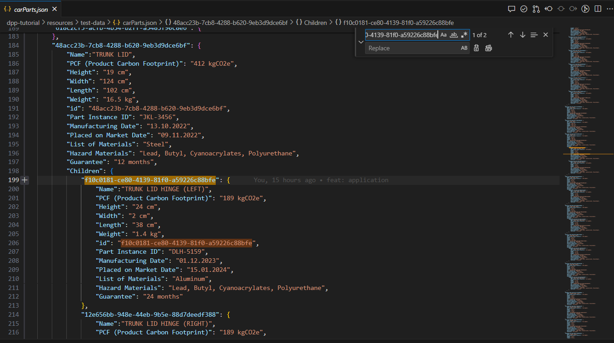
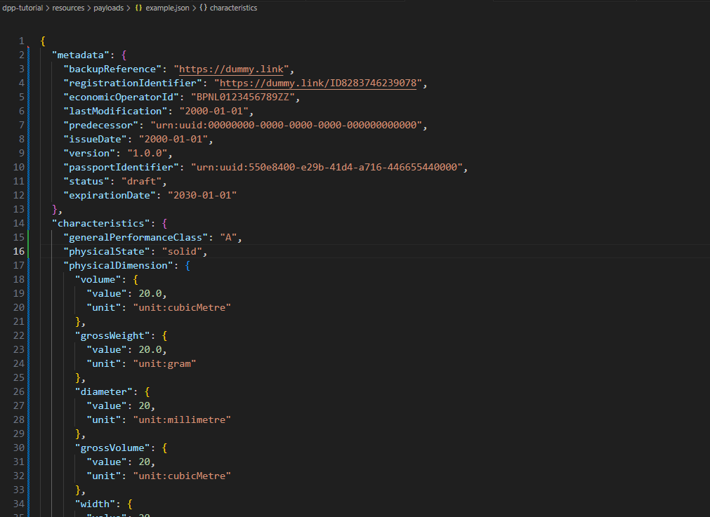
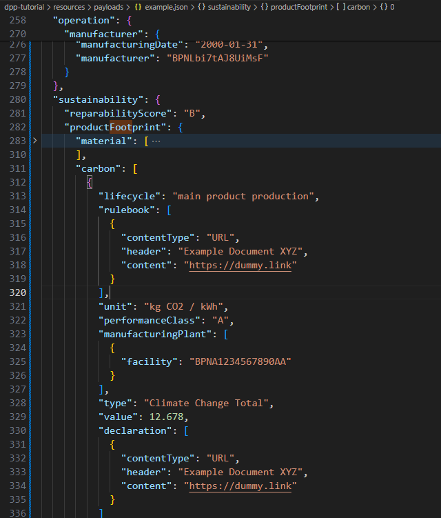

Builder Path¶
Deprecated
This tutorial is kept for reference. It may not match the current Eclipse Tractus-X release. All tutorials
In this Path, you, as a provider, will create a Digital Product Passport (DPP) for a specific Part of the Arena-X Car. To accomplish this, you will use terminal commands to send HTTP request, creating an Aspect Model and a Digital Twin.
Prerequisites¶
You must fullfill the following pre-requisites:
- A Catena-X Standarized Aspect Model (in this case we use the Digital Product Pass v5.0.0 Model)
- JSON Editor like VS Code or Notepad++
- Car Parts JSON Test Data found here
Warning
The model v2.0.0 of the Digital Product Pass is DEPRECATED and its used here only as demo purposes, please check the latests models in: Digital Product Pass Models
You must have the following components up and running:
- A Data Service (DS) to store passport payloads in a plain JSON format
- Digital Twin Registry (DTR) to store Digital Twins as Asset Administration Shells (AAS)
- A preconfigured EDC Conenctor (Data provider)
- Familiarity with the JSON structure
- Accessibility of components over the network
Clone a Git repository¶
Use the following command in your terminal to clone the digital product pass git repository
Note
If you already cloned this repository, you can ignore this step
Aspect Model Creation¶
This part provides a simple explanation on how to create a digital product pass serialized aspect model payload.
Follow this steps to create a new Digital Product Passport serialized model:
1º - Find test data before generating the model¶
In the worksession you will receive a paper with the test data, you can find the same information here in a test JSON file.
To find your part and be able to copy and paste the information:
1 - Search by uuid with CTRL + F:

You will get your information in a paper:
Example:
{
"f10c0181-ce80-4139-81f0-a59226c88bfe": {
"Name":"TRUNK LID HINGE (LEFT)",
"PCF (Product Carbon Footprint)": "189 kgCO2e",
"Height": "24 cm",
"Width": "2 cm",
"Length": "38 cm",
"Weight": "1.4 kg",
"id": "f10c0181-ce80-4139-81f0-a59226c88bfe",
"Part Instance ID": "DLH-5159",
"Manufacturing Date": "01.12.2023",
"Placed on Market Date": "15.01.2024",
"List of Materials": "Aluminum",
"Hazard Materials": "Lead, Butyl, Cyanoacrylates, Polyurethane",
"Guarantee": "24 months"
}
}
Tip
Copy and paste the data for creating your digital product pass faster!
2º - Copy the digital product pass aspect model template into a new file or window¶
Paste this Digital Product Passport v5.0.0 Payload in the VS Code/Notepad++:

It is a test data template that can be personalized to your part with the test data provider to you and your creativity!
3º - Substitute data in the template¶
For example for adding the PCF value follow the following path:
Example:

Where to substitute the data?¶
Follow this paths to find where the information is located.
| Property | Path |
|---|---|
| Width | characteristics.physicalDimension.width.value |
| Length | characteristics.physicalDimension.length.value |
| Weight | characteristics.physicalDimension.grossWeight.value |
| Height | characteristics.physicalDimension.height.value |
| Guarantee (Value) | characteristics.lifespan[0].value |
| Guarantee (Unit) | characteristics.lifespan[0].unit |
| Name (Really short) | identification.type.nameAtManufacturer |
| Part Instance Id | identification.serial[0].value |
| Manufacturing Date | operation.manufacturer.manufacturingDate |
| PCF | sustainability.productFootprint.carbon[0].value |
Congratulations! You have successfully created your own digital product pass!
The next step will be to register your data in a Data Service.
Tip
You can add more relavant data and personalized information at the digital product pass, follow the template and modify the data as you wish!
Data Provision¶
________EDC-Connector________ ________Registry________ ________Data Service________
| | | | | |
| Controlplane <-> Dataplane | <---> | AAS DTR | <---> | A plain JSON Server |
|_____________________________| |________________________| |____________________________|
This part provides the information needed to setup digital twin provisioning services as a data provider. Additionally, it enables you to create and register aspect models into the data service.
Add Aspect Model to the Submodel Server¶
The data generated in previous step can be stored into the submode data service.
Caution
The UUID should be written in the format: 6fb9a71b-aee6-4063-a82e-957022aeaa7a
Note
Generate an additional UUID here. It will be used as the digitalTwinSubmodelId which will be the linking between the Aspect Model and the DPP.
Open a new terminal and run the following command to add your data into the data service:
Substitute the digitalTwinSubmodelId for the generated UUID.
Windows
Click to see the Windows command
MAC & Linux
Click here to see the MAC command
Verify your data is registerd in the service
Windows
Click to see the Windows command
Mac & Linux
Click here to see the Mac & Linux command
2º Create Digital Twin¶
After preparing and registering aspect models, create a digital twin of a part assigned. Create a new json and use the template in resources/digital-twins/example-dt.json
Replace the following placeholders:
<PART_INSTANCE_ID> -> the value of part instance written on datasheet
<PART_NAME> -> the part number is written on the datasheet from a part
<digitalTwinId> -> the UUID written on datasheet
<digitalTwinSubmodelId> -> the UUID generated the step ago
Important
There are two instances of digitalTwinSubmodelId in the example. Please replace both of them:
- One is used as "id"
- The other is used as "href"
Important
There are two instances of digitalTwinId in the example. Please replace both of them:
- One is used as "id"
- The other is used as "globalAssetId"
3º Add Digital Twin into Digital Twin Registry (DTR)¶
After creation of the digital twin in previous step, add the twin into Digital Twin Registry (DTR).
Windows
Click to see the Windows command
Mac & Linux
Click here to see the Mac & Linux command
Note
Instead of using the relative path for "@resources/<YOUR_DT_JSON>.json", you can use the full path if preferred.
Note
Every physical part of vehicle is represented by a Digital Twin object. A car is manufactured with plenty of digital twins.
The registered digital twin can be checked/verified from the following command:
Important
The
Example:
Digital Twin Id : 3f89d0d4-e11c-f83b-16fd-733c63d4e121
Base64 Encoded: dXJuOnV1aWQ6M2Y4OWQwZDQtZTExYy1mODNiLTE2ZmQtNzMzYzYzZDRlMTIx
GET
/shell-descriptors/
Windows
Click to see the Windows command
Mac & Linux
Click here to see the Mac & Linux command
4º Add Relationships to Digital Twin (Drill Down Feature)¶
This step enables you to view the component relationships.
Example:
___________________
| |
| Battery |
|___________________|
|
| ___________________
|--->| |
| Battery Module |
|___________________|
|
| ___________________
|--->| |
| Battery Cell |
|___________________|
Refer to the irs-drill-down guide for more information
In case of error, you can always modify your digital twin using the following commands:
PUT /shell-descriptors/
Windows
Click to see the Windows command
Mac & Linux
Click here to see the Mac & Linux command
If everything works fine, then you have reached the end of data provisioning guide.
Congratulations, you have successfully setup the data provider. It is now available and ready to exchange data in the dataspace.
You can now process further with the original DPP-Tutorial at Step 3 - Generate the QR-Code. Click here to access the next steps.
NOTICE¶
This work is licensed under the CC-BY-4.0.
- SPDX-License-Identifier: CC-BY-4.0
- SPDX-FileCopyrightText: 2024 BMW AG
- SPDX-FileCopyrightText: 2024 CGI Deutschland B.V. & Co. KG
- SPDX-FileCopyrightText: 2024 Contributors to the Eclipse Foundation
- Source URL: https://github.com/eclipse-tractusx/digital-product-pass